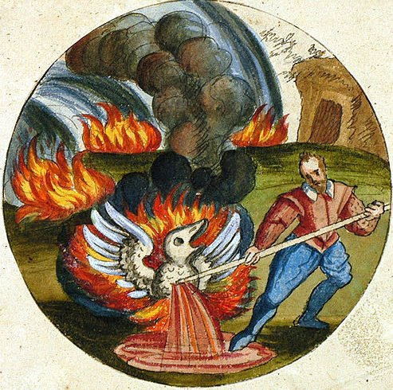

Книга Лэмбспринка, Древнего Благородного Философа, О Философском Камне
Переведена на латинский язык Николасом Барно Дельфина, Доктором Медицины и страстным Последователем этого Искусства
ПРЕДИСЛОВИЕ
Я - Лэмбспринк, потомок Старинного Рода, и Герб этот я ношу со Славою и по Справедливости.
Я с Философией знаком, и понял ее досконально.
Глубины знаний, что учитель дал, всем сердцем я изведал.
Cей дар мне подарил Господь,
Дав сердце, мудрости послушное.
Так стал я автором сего труда,
И так суть дела я здесь изложил,
Что и богатому, и нищему понять ее несложно;
Нет истины подобной этой,
И, слава Богу, свет ее не дал мне заблудиться в чаще.
Известна мне единственно правдивая основа:
Так берегите эту Книгу пуще глаза,
И втайне изучайте ее вновь и вновь.
В ней истину вы сможете открыть,
И этот Божий дар употребить к добру.
О Бог-Отец! В руках твоих и завершенье, и начало;
Мы взыскуем тебя ради Властителя Иисуса,
Чтоб просветил ты наши мысли и умы,
И славили Тебя мы неустанно,
И волею Твоей я завершил мой труд!
Ты все ведешь к счастливому исходу
И милость Твоя нас всечасно охраняет, -
Так с Божьей помощью я покажу читателю Искусство,
Не затуманивая и не скрывая истину.
Когда поймешь меня как надо,
Немедленно избавишься от пут ошибок.
Есть лишь субстанция одна,
В которой все сокрыто остальное;
Очисти серце и приготовься.
Тепло, терпение и время нужны тебе;
Чтобы познать награды неоценимой радость,
Ты должен труд и время щедро отдавать.
Нагреву ты подвернуть должен семя и металлы,
Изо дня в день, в течении недель.
Тогда в одной презренной вещи
Откроешь ты и доведешь до совершенства всю философскую работу,
Которая для многих невозможна,
Хотя задача эта нетрудна и ясна.
И если б мы ее открыли миру,
Нас люди бы подняли насмех, - и женщины, и дети.
Поэтому будь скромен и молчи,
Тогда пребудешь в мире и покое.
Помни о долге перед ближним и пред Богом,
Давшим нам Искусство, но не желавшем разглашенья.
На этом Предисловье мы закончим ,
Пожалуй, и приступим к описанию Искусства,
Открыто и правдиво показав его в рисунках,
Возблагодаря Создателя за все творенья.
Итак, рисунок первый.
Рисунок I
ЗНАЙ ЖЕ И ПОЙМИ ИСТИННО, ЧТО ДВЕ РЫБЫ ПЛАВАЮТ В НАШЕМ МОРЕ
Море есть тело, две Рыбы - Душа и Дух
Мудрецы рассказывают,
Что две рыбы сокрыты в нашем море, -
Без плоти и костей.
Их надо приготовить в этой же воде;
Они затем и сами станут морем,
Таким широким, что его не описать.
Но Мудрецы нам также говорят,
Что две рыбы - лишь одна, совсем не две;
Так хоть и две их, но все ж одна -
Тело, Душа и Дух.
Затем, я буду откровенен,
Всех троих ты вместе приготовь,
Хоть море это великое весьма.
Вари сульфур с сульфуром хорошенько
И рот замкни свой на замок.
Науку эту скрой себе на пользу,
И бедности ты больше не узнаешь.
Но только знанье тщательно скрывай.
Рисунок II
ЗДЕСЬ ТЫ ЯСНО ВИДИШЬ ЧЕРНОГО ЗВЕРЯ В ЧАЩЕ
Гниение
Мудрецы говорят
Что дикий зверь живет в лесу,
И шкура его чернее черного.
Но если его голову отсечь,
То чернота совсем исчезнет,
И уступит место снежной белизне.
Пойми значенье этой головы:
Главою Ворона называют черноту;
Как только она сходит,
Тут же возникает белый цвет;
Имя дается это в момент лишенья головы.
Как Зверя чернота исчезнет в черном дыме,
Ликуют мудрецы,
И радуется сердце их;
Но держат это они в секрете,
Чтоб не узнал глупец,
А вот Сынам своим по доброте душевной
Они приоткрывают тайну в книгах;
Пускай же тот, кто сей дар получит,
Возрадуется втайне,
Поскольку Богу противно разглашенье.
Рисунок III
ПОЗНАЙ БЕЗ СТРАХА, ЧТО В ЛЕСУ СКРЫВАЮТСЯ ОЛЕНЬ И ЕДИНОРОГ
В теле находятся душа и дух
Мудрецы правдиво утверждают,
Что два животных обитают в чаще:
Одно славное, прекрасное, и быстрое,
Это олень, большой и сильный;
Другое же - единорог.
Они скрываются в лесу,
И счастлив будет тот,
Кто сможет их поймать в ловушку.
Здесь Мастера открыто показали,
Что повсюду
Звери эти живут в лесах
(Но знай, что лес только один).
И если образ этот применить к Искусству,
То лесу тело уподобим,
Что будет верно и не ложно.
Дух же единорогом был всегда.
Олень другого имени не хочет,
Кроме Души; и это имя ему пристало.
Тот же, кто знает как приручить зверей Искусством,
Чтобы они соединились вместе,
И как ввести их в чащу и вывеcти оттуда,
По праву назовется Мастером,
Так как понятно нам,
Что он достиг до плоти золотой,
И триумфатор он во всем; и даже
Над Августом Великим властен.
Рисунок IV ЗДЕСЬ ТЫ ВИДИШЬ ВЕЛИКОЕ ЧУДО - ДВА ЛЬВА СОЕДИНЯЮТСЯ В ОДНОГО
Дух и Душа должны объединиться в Теле
Истинно учат Мудрецы,
Что два могучих льва, самец и самка,
Cкрываются в аллее тенистой и укромной.
Их должен Мастер заарканить,
Хотя они и ловки, и свирепы,
А вид их дик и страшен.
Но кто умением и мудростью
Поймать их сможет,
И в тот же лес их снова завести,
Тот заслужившим похвалу превыше всех
По праву будет назван,
И мудрости земной раздвинувшим пределы.
Рисунок V
ВОЛК И СОБАКА НАХОДЯТСЯ В ОДНОМ ДОМЕ, И ВСКОРЕ ПРЕВРАЩАЮТСЯ В ОДНО
Тело умерщвлено и отбелено, затем соединено с Душой и Телом путем насышения ими
Александр пишет из Персии,
Что волк и собака встретились в поле;
Как утверждают Мудрецы, они
Ведут свой род от общих предков,
Но волк пришел с востока,
А собака с запада.
Их переполняют злоба,
Ревность, бешенство и гнев;
Им суждено убить друг друга,
И породить смертельный яд.
Но если жизнь к ним вернется,
Они Лекарством несомненно станут,
Великим и Бесценным,
Славнейшей Панацеей на земле,
Что молодит и возвращает силы Мудрецам,
Хвалу поющим Богу неустанно.
Рисунок VI
ЭТО, БЕЗ СОМНЕНИЯ, НАСТОЯЩЕЕ ЧУДО – В ЯДОВИТОМ ДРАКОНЕ СКРЫВАЕТСЯ ПОИСТИНЕ ВЕЛИКОЕ ЛЕКАРСТВО
Меркурий осажден или сублимирован, растворен в своей подлинной воде, а затем еще раз подвергнут коагуляции
Дикий Дракон живет в чаще лесной,
Он беспредельно ядовит, но обладает всем.
Когда же видит пламя Солнца,
То источает яд вокруг,
И вверх стремится так неудержимо,
Что перед ним никто не устоит, -
И даже Василиск с ним не сравнится.
А кто сумеет Дракона погубить,
Того минуют все напасти.
Но яд и многоцветье твари
К моменту смерти только возрастают;
И так Лекарством становится отрава.
А яд он быстро поглощает,
Поскольку пожирает свой же хвост.
Все происходит только с его телом,
Что источает чудеснейший Бальзам,
Достоинства которого неисчислимы,
И он – причина радости Мудрейших.
Рисунок VII
МЫ СЛЫШИМ ДВУХ ПТИЦ В ЛЕСУ, НО СЛЕДУЕТ ПОНЯТЬ, ЧТО ПТИЦА ТАМ ТОЛЬКО ОДНА
Меркурий после многих сублимаций наконец стал фиксированным и огнеупорным: сублимацию следует повторять до тех пор, пока не будет достигнута фиксация
В лесу найдешь гнездо,
В котором выросли наследники Гермеса;
Один из них всегда стремится ввысь,
Другой же рад в гнезде недвижным оставаться,
Но никто из них не властен бросить брата.
Тот, что внизу, удерживает верхнего,
И не дает ему гнезда покинуть,
Как муж с женою дома поступает,
Держа ее в оковах брачных.
Так же и мы испытываем радость постоянно,
Сумев орлицу от побега удержать,
И воздаем хвалу Создателю-Отцу.
Рисунок VIII
ЗДЕСЬ ДВЕ ПТИЦЫ, БОЛЬШИЕ И СИЛЬНЫЕ, - ТЕЛО И ДУХ; ОДНА ПОЖИРАЕТ ДРУГУЮ
Помести Тело в навоз, или в теплую баню, чтобы Дух отделился от него. Тело побелеет в процессе, а Дух станет красным благодаря нашему Искусству. Все существующее стремится к совершенству; так же приготавливается и Философский Камень
Есть в Индии прекрасный лес,
В нем птицы связаны две вместе.
Одна красна, другая - белая, как снег.
Они клюют друг друга, и вторая
Оказывается съеденной товаркой.
Им суждено стать голубями,
А из голубей возникнет Феникс,
Что позади оставит смерть и черноту,
Жизнь обретая полную чудес.
На это силы дал ему Господь,
Так что он может вечно жить, не зная больше смерти.
Он нам дает богатство, жизнь нашу хранит,
И с его помощью творятся чудеса,
Что истинным Философам известны.
Рисунок IX
ГОСПОДЬ ЛЕСОВ ВОССТАНОВИЛ СВОЕ КОРОЛЕВСТВО, И ОТСТРОИЛ ЕГО ОТ НИЗА ДО САМОГО ВЕРХА. ЕСЛИ УДАЧА УЛЫБНЕТСЯ ТЕБЕ, ТЫ СМОЖЕШЬ ИЗ ОРАТОРА ПРЕВРАТИТЬСЯ В КОНСУЛА; ЕСЛИ ЖЕ СУДЬБА НЕБЛАГОСКЛОННА, КОНСУЛ МОЖЕТ СТАТЬ РИТОРОМ
Так ты сможешь убедиться, что Тинктура истинно достигла первой степени совершенства
Теперь готовься слушать о чудесном;
Воистину великому я научу тебя -
Как возвышается над чернью Король.
Так слушай же, что говорит властитель леса:
Я одолел и победил моих врагов,
Попрал ногами ядовитого Дракона;
Я - величайший и славнейший из Царей.
Не существует большего чем я
Среди детей Искусства и Природы,
Среди живых творений на земле.
Подвластны мне предметы всех желаний,
Я власть даю и вечное здоровье,
А также золото, и серебро, и самоцветы,
И панацею от недугов малых и больших.
Но все же я неблагороден был вначале,
И о высоком пложеньи не мечтал.
Достичь вершины прекрасной и великой
Дано мне было Богом и Природой.
Так из нижайшего я стал наивысочайшим,
И укрепился на самом славном троне
В суверенном и свободном государстве:
Поэтому Гермес назвал меня Властителем Лесов.
Рисунок X
САЛАМАНДРА ЖИВЕТ В ОГНЕ, КОТОРЫЙ ПРИДАЕТ ЕЙ ВЕЛИКОЛЕПНЕЙШИЙ ОТТЕНОК

Это - повторение, изменение и улучшение Тинктуры, или Философского Камня, в целом называемое его Увеличением
Нам сказки говорят,
Что Саламандра рождена в огне;
В огне она находит жизнь и пищу,
Которую назначила сама Природа.
Она в горах высоких обитает,
В кольце из языков огня, -
Один меньше другого -
Здесь Саламандра принимает ванны.
Одна треть пламени побольше, четверть - ярче:
Так Саламандра моется и очищается,
И направляется затем к пещере,
Где падает, копьем охотника пронзенная
Насковозь, и жизнь ее с кровью вытекает.
Но это происходит лишь на пользу:
Ведь эта кровь бессмертие питает,
И гибель ей отныне не страшна.
Кровь Саламандры - бесценное Лекарство,
Которому нет равного под солнцем,
Что может все болезни изгонять
Из тел металлов,
Животных и людей.
Источником науки оно служит
Мудрецам, Дар Божий получающим в награду,
Что именуют Философским Камнем,
Хранящим власть над миром безраздельно.
Дар этот Мудрецы передают с любовью
На память добрую ученикам прилежным.
Рисунок XI
ОТЕЦ И СЫН СОЕДИНИЛИ РУКИ С РУКАМИ ПРОВОДНИКА: ЗНАЙТЕ, ЧТО ЭТИ ТРОЕ - ТЕЛО, ДУША, И ДУХ
Вот Израильтянин старый,
Имеющий единственного Сына,
Которого всем сердцем любит.
Скорбя, он ему скорбь сулит
И предает его во власть Проводника,
Что Сына поведет, куда захочет.
Так обратился к Сыну Проводник:
Иди за мной! Я поведу тебя
К вершине высочайшей из высоких,
Где ты поймешь всю мудрость, и узришь
Величие и моря, и земли,
Себе на радость.
По воздуху я пронесу тебя
К вратам небес, что в вышних.
Последовал призыву Сын,
И вверх с Проводником поднялся;
Увидел он небесный трон,
Чью славу не описать словами.
Прекрасным видом насладившись,
Отца он вспомнил, что вздыхал так тяжко,
И пожалев его, сказал:
Домой вернуться время мне настало.
Рисунок XII
В ИНДИИ ЕСТЬ ГОРА, НА КОТОРУЮ ПОДНЯЛИСЬ ДУХ И ДУША - ТО ЕСТЬ СЫН И ПРОВОДНИК
Так Сын Проводнику сказал:
Настало время мне к Отцу спуститься,
Поскольку он тоскует без меня.
Ко мне взывая, вздыхает безутешно.
И Сыну отвечает Проводник:
Я одного Тебя не отпущу;
Ведь от родительской груди я оторвал Тебя,
И я верну тебя назад,
Так что Отец возрадуется снова,
И сила вновь к Нему вернется.
Так оба странника пустились в путь,
И вскоре в дом Отца вернулись.
Когда ж Отец увидел возвращенье Сына,
Он радостно воскликнул:
Рисунок XIII
ЗДЕСЬ ОТЕЦ ПОЖИРАЕТ СЫНА; ДУША И ДУХА ОТЛЕТАЮТ ОТ ТЕЛА
О Сын мой, я был мертв без Тебя,
И жизнь моя была в опасности.
Я возрождаюсь, когда Ты возвращаешься
Домой, грудь наполняя радостью.
Лишь только Сын вступает в дом Отца,
Тот прижимает Его к сердцу рьяно,
И от чрезмерной радости Его глотает,
Рот раскрывая необычно широко,
Потея от усилия такого.
Рисунок XIV
ЗДЕСЬ ОТЕЦ ПОТЕЕТ ЩЕДРО, В ТО ВРЕМЯ КАК МАСЛО, А ТАКЖЕ ИСТИННАЯ ТИНКТУРА МУДРЕЦОВ ИСТЕКАЮТ ИЗ НЕГО
Отец потеет ради Сына,
И молит искренне Создавшего
Сей мир трудом Своим, -
Того, кто вещи сотворил и сотворяет, -
Из его тела Сына возродить,
И к прежней жизни дать ему вернуться.
Бог, прислушиваясь к просьбам этим,
Отца склоняет в сон.
Затем Он посылает дождь с небес -
От светлых звезд на землю.
И дождь этот серебряный, плодотворящий,
Росой Отца умоет, умастит Его Тело.
Нам в завершеньи дела помоги, Господь,
И Даром нас бесценным награди!
Рисунок XV
ЗДЕСЬ ОТЕЦ И СЫН СОЕДИНИЛИСЬ ДРУГ С ДРУГОМ НАВСЕГДА
Спящий Отец здесь стал
Водой прозрачной,
И через добродетель сей воды
Работа выполнена совершенно.
Теперь прекрасный и прославленный Родитель,
Нам Сына нового рождает.
Сын навсегда останется в Отце,
Отец же пребывает в Сыне.
И таким образом в вещах различных
Они дают бесценный, несказанный плод.
Вовеки суждено им жить,
Над смертью насмехаясь.
Им Божьей милостью бессмертие дано,
Отцу и Сыну, триумфаторам славнейшим
Средь блеска Королевства их.
Они сидят на троне;
Меж ними, в пурпурном одеяньи,
Нам Древний Мастер улыбается безмолвно.
НЕВИДИМОМУ ВЛАСТИТЕЛЮ МИРА,
ЕДИНСТВЕННО ИСТИННОМУ И БЕССМЕРТНОМУ БОГУ
ХВАЛА И СЛАВА НЫНЕ И ПРИСНО.
АМИНЬ.
ФИЛОСОФСКИЙ ОГОНЬ - Послание Яна Понтануса, касающееся Камня, называемого Философским